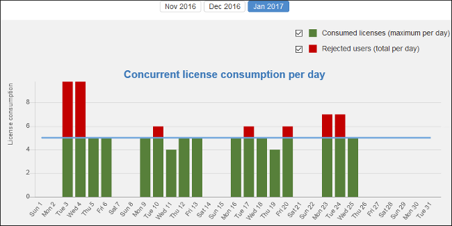
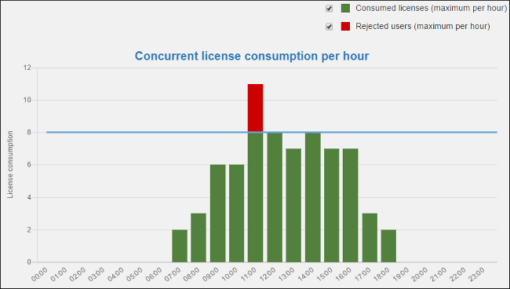

License Server Management and Statistics Pages
A system administrator can manage and access information about the license server at:
http://hostName:port/oXygenLicenseServlet.
This page provides access to several statistics reports and management tasks. It also shows the current status of the server and provides additional instructions for using the license server with Oxygen XML Editor.
- Current Allocated Licenses - Opens the Allocated License Report page.
- Usage Statistics - Available only for floating licenses. Opens the License Usage Statistics page.
- View License Key - Use this link to view details about the license key.
- Replace/Remove License Key - Use this link if you need to replace or remove the current license key.
- Configuration - Opens a page where you can configure notification settings and specify whether or not users are allowed to lock licenses. This page can be used for setting up the mail server used for sending emails whenever license requests from users are rejected.
- Users management - Available only for named-user licenses. Opens a page where you can manage the list of users who are entitled to use the license key.
Allocated License Report Page
- License load - A graphical indicator that shows how many licenses are available.
- License server status - General information about the license server status, such as start time, license counts, rejected and acknowledged requests, average usage time, license refresh and timeout intervals, location of the license key, and the server version.
- Current running instances - Lists all currently acknowledged
users, including user name, date and time when the license was granted, IP and MAC
address of the computer where Oxygen XML Editor runs, and lock status.
- Revoke - A system administrator can click on the
 Revoke icon next to a user name to
release that particular license and return it to the pool.
Revoke icon next to a user name to
release that particular license and return it to the pool. - Unlock - If a user has locked their license, the system administrator can also unlock it from this page.
- Revoke - A system administrator can click on the
http://hostName:port/oXygenLicenseServlet/license-servlet/report-xml.License Usage Statistics Page (Floating License Only)
- Maximum number of concurrent licenses - Shows the maximum number of floating licenses that can be consumed at any given time.
-
Concurrent license consumption per day - A chart that shows the peak number of licenses that were consumed and the total number of users that were rejected, on a daily basis. This chart can be used to detect the amount of concurrent licenses that are needed to avoid having rejected users.Tip: You can click on any bar to see the license consumption per hour for that particular day.
Figure 1. Concurrent License Consumption per Day Chart  -
Concurrent license consumption per hour - A chart that shows the peak number of licenses that were consumed per hour throughout that particular month. This is useful for identifying the time of day when the most licenses were consumed.
Figure 2. Concurrent License Consumption per Hour Chart 
Users Management Page (Named-User License Only)
When using a named-user license key, the license server allocates available licenses on a first come first served basis until the maximum number is reached. Further users attempting to get a license key will be rejected.
- Revoke a user's right to use a license.
- Reactivate a previously deactivated user.